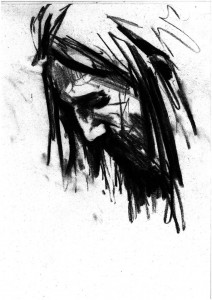
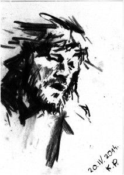
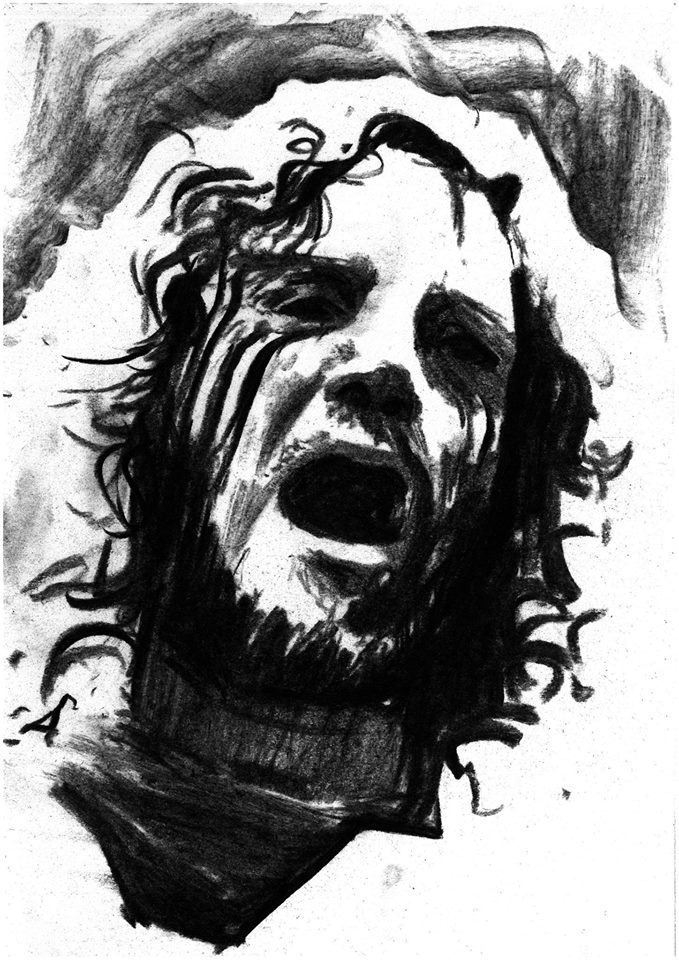

Były Red Hot Chili Pepper John Frusciante podsyca wewnętrzny ogień swoim najnowszym dziełem, Enclosure i wyjaśnia nam dlaczego jego dni na scenie to już przeszłość.
Od opuszczenia po raz drugi RHCP w 2009 roku John Frusciante zniknął niemalże z życia publicznego. Ale to nie oznacza, że nie pisał, nie nagrywał i nie wydawał nowej muzyki. W rzeczywistości jego dokonania w ostatnich latach były nie tylko liczne, ale i różnorodne. Obejmowały zarówno albumy solowe (pochodzący z 2012 roku PBX Funicular Intaglio Zone), miksujące gatunki EP-ki (w 2012 Letur-Lefr, a w 2013 Outsides), pojedyncze utwory udostępniane przez artystę (10-minutowe solo gitarowe Wayne), współpracę (m. in. z własną żoną Nicole Turley oraz z gitarzystą Mars Volta i At the Drive-In Omarem Rodriguezem-Lopezem) a nawet produkcję muzyczną (dla związanego z Wu-Tang Clan duetu Blacka Knights).
Ale niezależnie od tego jaki projekt realizuje w tej chwili, podstawą jest to, że Frusciante zawsze, w tej czy w innej formie tworzy muzykę. Co nie zupełnie jest tym samym co granie muzyki.
„To, co dla mnie istotne to proces kreacji,” mówi. „Byłem naprawdę sfrustrowany kiedy byłem w zespole rockowym, gdzie wszyscy mieli obsesję skończenia pracy na koniec dnia. Nie uważam, że celem powinno być „Oh wspaniale, skończyliśmy. Teraz możemy przejść do ważniejszych zadań: promocji i występów scenicznych.” Dla mnie bycie w studio i tworzenie jest nagrodą samą w sobie. A najlepsze rzeczy zdarzają się w trakcie, a nie po wszystkim. Więc jestem zadowolony, że mogę żyć w studiu i zanurzyć się w muzyce.” 
{kind=link}
W końcu, choć ostatnio Frusciante wydaje się być oczarowany elektronicznymi instrumentami, podkreśla, że fani jego gitarowej gry znajdą wiele do kochania w jego solowym dorobku. „W rzeczywistości wykorzystuję tu gitarę częściej niż na jakimkolwiek albumie RHCP,” mówi. „Granie solówek z Chili Peppers oznacza, że grasz 20-30 sekund w połowie piosenki. A sam mogę wymyślić i zagrać 10-minutowe solo. Gitara zawsze gra ogromną rolę w mojej muzyce.”
Być może najważniejszy jest fakt, że czy to grając na gitarze, czy to śpiewając czy programując syntezator lub automat perkusyjny Frusciante w swojej solowej twórczości daje nam w każdym przypadku nieprzefiltrowane i niczym nie przesłonięte owoce swojego kreatywnego umysłu. „Jako muzyk pragnę usłyszeć, że moja wizja została kompletnie zrealizowana. Nie interesuje mnie patrzenie jak inni ludzie chcą zmienić to, co zrobiłem lub jak ich własne muzyczne talenty odbijają to, co zrobiłem. Chcę zrobić wszystko sam. To nie jest kwestia chęci kontrolowania wszystkiego – to kwestia tworzenia bez zwracania uwagi na czynniki ludzkie i biznesowe wpływające na muzykę.”
W przeddzień wydania Enclosure Frusciante poświęcił nieco czasu by porozmawiać z Guitar World o swoim procesie kreatywnym, swojej miłości do instrumentów elektronicznych i podejściu do gitarowych solówek w swojej obecnej twórczości. Mówi z zaskakującą szczerością o artystycznych wyzwaniach, którym musiał stawić czoło w czasie, gdy był członkiem red Hot Chili Peppers i wyjaśnia dlaczego, choć jest prawdopodobnie bardziej oddany tworzeniu muzyki w studio niż kiedykolwiek, może już nigdy nie zagrać na scenie.
Twoja solowa muzyka obejmuje wiele różnych stylów. Dla tych, którzy znają Cię z Red Hot Chili Peppers, to, co mogą usłyszeć, może być co najmniej zaskakujące.

Choć na Enclosure jest sporo gitar, ta muzyka nie opiera się na riffach. Nazywasz ją sam progresywnym synth-popem. W jaki sposób gitara wpisuje się w takie brzmienia?
Ćwiczyłem jako muzyk przez ostatnie 6 lat, by myśleć bardziej jak klawiszowiec niż jak gitarzysta. Nie dlatego, że faktycznie gram na keyboardach – programuję syntezatory i w taki sposób wprowadzam je do mojej muzyki. ale jako gitarzysta mogę grać równolegle do gry Ricka Wakemana z Yes czy Tony`ego Banksa z Genesis i myśleć tak jak oni. Więc gdy komponuję teraz progresje akordów, one mają więcej wspólnego z tym stylem. Gdy gram solo, chce żeby miało jakieś ciekawe modulacje lub inne elementy – innymi słowy szukam czegoś na bazie czego gitarzyści raczej nie chcą grać solówek.
Kiedy zabierasz się do tworzenia długich gitarowych utworów, takich jak Same z Outsides lub Cinch z nowego albumu, co chcesz osiągnąć?
Próbuję postawić sobie wyzwanie. Próbuję stworzyć rzeczy na bazie których gitarzyście będzie trudno zagrać solo. To jest dla mnie rozrywka – obserwować związek między moją wyobraźnią, moimi przyzwyczajeniami i moim umysłem. Chcę by one wszystkie ze sobą współgrały i chcę by nie przychodziło to łatwo. Nie chcę po prostu grać solówki na bazie tonacji E czy coś w tym rodzaju. Chcę by akordy się zmieniały, chcę by tonacja się zmieniała, chce żeby to było coś, do czego bluesowy gitarzysta nie zagra z marszu. Przyglądając się historii muzyki zauważyłem, że są ludzie naprawdę świetni w graniu solówek na bazie modulowania tonacji, jak George Harrison, Jeff Beck czy Mick Ronson. Ale zauważyłem też, że oni nie grali tak dziko jak Frank Zappa czy Jimi Hendrix. A oni mogli tak dziko grać, bo grali solówki głównie na bazie chwytów. Więc to, co próbuję zrobić to grać sekwencje w rodzaju tych, do których grali solówki Harrison czy Ronson, ale grać je w tak szalony sposób jak Hendrix czy Zappa.

Komponujesz i wykonujesz również wszystkie ścieżki pozostałych instrumentów czyli głównie syntezatorów, automatów perkusyjnych i samplerów. Co skłoniło Cię do zainteresowania się instrumentami elektronicznymi?
Jeśli chodzi o instrumenty elektroniczne musisz zrozumieć, że powodem dla którego uczyłem się grać na nich wszystkich, jest to, że wierzę w moją własną wizję muzyki i nie chcę tylko współuczestniczyć w tworzeniu muzyki, tak jak to się działo, gdy byłem w zespole. Chcę tworzyć utwór muzyczny sam. Chcę zagrać na bębnach w taki sposób, by osiągnąć brzmienie którego oczekuję i zagrać na syntezatorze tak, by brzmiał tak jak chcę. I chcę korzystać z sampli, bo czuję że są najsilniejszym, najpotężniejszym instrumentem na świecie. To jest właśnie przyczyną tego, że gram na tych wszystkich instrumentach. Jako muzyk pragnę słyszeć, że moja wizja została kompletnie zrealizowana.
To że nagrywasz sam, w domu, pewnie w tym pomaga.
Owszem. Nad Enclosure siedziałem od roku, ale wydaję to dopiero teraz. Nie odczuwałem żadnego zewnętrznego nacisku, a to potrafi być naprawdę wkurzające. To nie pomaga, gdy jesteś otoczony ludźmi, którzy dbają tylko o to kiedy skończysz, podczas gdy ty faktycznie masz frajdę z robienia czegoś, z bycia w procesie. To przeszkadza.
To wszystko co dzieje się po nagraniu muzyki – marketing, wywiady, występy – to wszystko rzeczy, w których nie masz ochoty znów uczestniczyć…
Nie uważam, żeby muzyk potrzebował o tym myśleć. Beethoven pisał wspaniałą muzykę. Nie myślał czy ludzie polubią jego urok osobisty, uśmiech na twarzy, nie myślał o pieprzonych dowcipach, które musi opowiedzieć, wiesz? Skupiał się na muzyce i w konsekwencji był coraz lepszym i lepszym kompozytorem przez całe swoje życie. Niezależnie od tego, jak publiczność reagowała na to co robił, nie kierował się jej opinią. Uważam, że muzyk postępując w ten sposób może żyć długo i szczęśliwie. Jeśli zawsze myślisz o tym, czy to co robisz jest właściwe, przystępne czy chwytliwe, to nie są rzeczy które mają coś wspólnego z muzycznymi umiejętnościami. To są sposoby by całować w d.. publiczność i kolesi z przemysłu muzycznego. Nie nauczysz się ich ćwicząc grę na swoim instrumencie. Więc moim zdaniem cele do których dążą często profesjonalni muzycy nie są celami muzycznymi; to są cele finansowe, popularność i oglądalność. Nie rozumiem tego. Mamy tak pojemny umysł i tak niewiele czasu jesteśmy na tym świecie.
Jak ma się do tego wszystkiego granie na żywo, koncertowanie?
W przypadku Red Hot Chili Peppers za drugim razem byłem w tym zespole 10 lat. I spędzaliśmy wtedy więcej czasu w trasach niż tworząc muzykę. Według mnie to nie jest dobry sposób życia dla muzyka. No chyba że potrzebujesz i oczekujesz nieustannie czyjejś uwagi – wtedy to jest wspaniały sposób życia. Ale dla kogoś, kto kocha praktykowanie muzyki to prawdziwe wyzwanie być w takim zespole. Dążyłem do tego, by będąc w trasie ćwiczyć każdego dnia przed i po występie, a gdy mieliśmy wolne dni – czytać. Ale robiąc tak w rock and rollowym biznesie jesteś w opozycji. Większość ludzi jest tam szczęśliwa spędzając większość swojego czasu na obmyślaniu co zrobić, by stać się jeszcze popularniejszym. Nie sądzę by był to zdrowy sposób życia dla muzyka.
Więc nawet sam fakt grania muzyki na scenie stał się dla Ciebie nieatrakcyjny?
No cóż… Tak, bo występując wciąż się powtarzasz i powtarzasz. Możesz wrzucić gdzieś jakiś ekstra riff albo poimprowizować na koniec koncertu, ale zasadniczo robisz to samo co wieczór. Publiczność doświadcza tego po raz pierwszy, a ty robisz to samo co dzień od półtora roku. Zachowujesz się jakbyś był niesamowicie podekscytowany, a wcale nie jesteś. To wielka gra pozorów, w którą publiczność z jakiegoś powodu wierzy.
{kind=link}
Czy planujesz w przyszłości granie swojego materiału na żywo?
Ummm…nie. Nie uważam się za urodzonego showmena. Myślę, że występy to coś do czego się przystosowałem czy nawet zmusiłem. Ale nie czuję się sobą w takich sytuacjach. Według mnie Flea, Anthony i Chad to urodzeni showmani. Ja nie. Nie do tego zostałem stworzony.
Wolisz tworzyć swoją muzykę w studio.
Tak. Koncertowanie wydaje mi się … to jak jakaś parada. W pewnym sensie wykorzystujesz swoją fizyczność jak rekwizyt lub coś w tym rodzaju. To naprawdę nie jest muzyczny zabieg. Myślę, że pokolenia które przyszły od czasu pojawienia się MTV muszą pamiętać, że muzyka nie jest dziedziną wizualną. To dźwięk. To zakłócenie cząstek powietrza. To nie jest mina którą ktoś robi, ani jego sceniczny kostium. Obecnie myślimy, że prawdziwy muzyk to ktoś kogo można zobaczyć na scenie, grającego na instrumencie, kręcącego się w kółko i robiącego swoje grymasy. Ale ludzie muszą pamiętać że nie zawsze tak było. Były epoki gdy najbardziej znaczącymi muzykami byli kompozytorzy. Oni nawet nie pojawiali się tam, gdzie słuchałeś muzyki. Spędzali czas w odosobnieniu, tworząc.
Jakich gitar używasz ostatnio komponując i nagrywając swoja muzykę?
Grałem na w większości na Yamaha SG-2000, pochodzących z późnych lat 70. i wczesnych 80. To mój ulubiony rodzaj gitar. Możesz na nich osiągnąć znaczną różnorodność tonalną, a jeśli chodzi o drewnianą konstrukcję są ciężkimi gitarami, więc mają bardzo „tłusty” dźwięk. Znacznie „tłustszy” niż Straty. Mam też kilka SG-1500, Ibaneza Artist i gitarę Carvin Allan Holdsworth. Ta ostatnia jest bardzo interesująca – jest pusta wewnątrz, ale nie ma „efek”. Ma w związku z tym specyficzny dźwięk. No i mam jeszcze gitarę Roland G303, której używam razem z syntezatorem gitarowym GR300.
Będąc w RHCP byłeś zawsze kojarzony z graniem na starych Stratach.
Wtedy grałem na gitarach z lat 60.i 70., ale teraz wolę gitary z początku lat 80. Przypadkowo to ten sam okres z którego pochodzi większość sekwencerów i automatów perkusyjnych z których korzystam. Myślę, że to był świetny czas dla instrumentów elektronicznych.
Z punktu widzenia konstrukcji gitar wczesne lata 80. to nie jest raczej okres warty fetyszyzowania…
Tak i to wydaje mi się zabawne, bo te gitary mają kopa. Kiedy zaczynałem grać na Stratach, one nie były popularnymi gitarami. W tamtych czasach ludzie grali na heavy metalowych gitarach. Mojego pierwszego starego Strata kupiłem za jakieś 800 dolców. Wtedy nie były zupełnie poszukiwane. Grałem na nich bardzo długo i przywykłem do tego wszystkiego, czym charakteryzują się stare gitary z jedną przystawką. Tymczasem Yamaha SG jest gitarą tak zrównoważoną harmonicznie jak pianino lub organy. Niezależnie od tego czy jest to najniższa czy najwyższa nuta na instrumencie, mają takie samo spektrum. A nie można osiągnąć pełni brzmienia, gdy nuty zaczynają się od cienkich, a potem stają się grubsze …i takie tam rzeczy. Dostajesz wyraźne, mocne, pełne, niezmienne brzmienie każdej struny na każdym progu. To dla mnie wspaniały instrument, zwłaszcza biorąc pod uwagę to, co mówiłem o myśleniu jak klawiszowiec podczas gry na gitarze.
A co ze wzmacniaczami?
Najczęściej używam Marshalla Silver Jubilee. Mam wzmacniacz tuż koło siebie i kolumnę w osobnym pokoju. Kiedy nagrywam, czasami wysyłam dźwięk z powrotem do pokoju przez różne głośniki i zbieram go z powrotem mikrofonem przestrzennym. Potem zestawiam brzmienie pokoju z oryginalnym, nagranym blisko dźwiękiem, więc wiele gitarowych dźwięków na płycie nie jest tylko dźwiękami gitary nagranymi w momencie, gdy na niej grałem.
Czy zależy Ci na tym, by nagrywać swoją muzykę szybko?
Powiedziałbym, że w tej dziedzinie rzeczy dzieją się dość szybko. Najprawdopodobniej mam w każdej chwili na warsztacie 2-3 piosenki. Ale jak powiedziałem wcześniej, to, co jest dla mnie ważne to niekoniecznie kończenie rzeczy, ale uczestniczenie w procesie kreacji. Powód dla którego dążę do osiągnięcia czegoś w muzyce to skłonność mojego umysłu do badania. To odkrywanie jest dla mnie interesujące, a nie jego wynik.
To że komponujesz i nagrywasz w domu czyni możliwym zanurzenie się w procesie kreacji tak bardzo jak bardzo masz na to ochotę.
Moje życie to mniej więcej tworzenie codziennie muzyki przez cały dzień. Ale często po prostu leżę sobie i czytam książki, oglądam telewizję lub spędzam czas z moją żoną. Piszę muzykę przez kilka dni, potem wyjeżdżam gdzieś na kilka dni. Dla mnie to nie jest praca.
To brzmi jak przepis na przyjemne życie.
Tak właśnie postanowiłem żyć. Dążę do tego, by kierowały mną raczej czynniki muzyczne niż finansowe. Muzyka to dla mnie przyjemność, relaks, coś interesującego i stymulującego. I nie muszę ścierać się z nikim kto próbowałby popchnąć mnie w takim czy innym kierunku. Nie potrzebuję niczego z zewnętrznego świata. Więc powiedziałbym, że moje życie jest raczej zrównoważone. Nie ma w nim zupełnie tego całego stresu.
Rozmawiał: Richard Bienstock.
W tekście wykorzystano jako ilustracje rysunki Kamila Pieczykolana.
Przetłumaczyła: Wanda Modzelewska
Edycja: Wanda Modzelewska